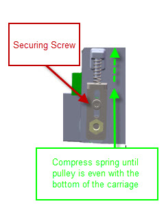
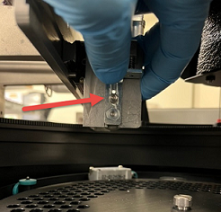
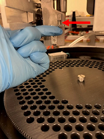

This procedure describes how to remove or replace the wash carousel when inspecting the wash carousel, cleaning a spill or excessive dust in the wash carousel, inspecting or replacing bearings in the wash carousel, or troubleshooting elevated luminometer dark counts.
Remove or replace the wash carousel when:
- inspecting the wash carousel.
- cleaning a spill or excessive dust in the wash carousel.
- inspecting or replacing wash carousel bearings.
- troubleshooting elevated luminometer dark counts.
This procedure requires removal of the analytical module covers and performing service in the area of the luminometer. These cautions and warnings apply to the luminometer.
Warning: The photomultiplier tube (PMT) is a very sensitive photon measuring device. Any background or extraneous light coming into contact with a powered PMT can saturate the PMT and reduce the gain. This reduces the performance of the PMT, and it can take a long time for the PMT to recover or it might never recover fully. A magnetic field close to a powered PMT also reduces the performance of the PMT. The magnetic field causes the electrons to follow a curved path instead of moving in a straight line. When you are performing service in the area of the luminometer, observe the following rules.
- Never shine a flashlight around the luminometer while the PMT is powered on.
- Never bring a strong magnetic field close to the luminometer while the luminometer is powered on.
- Before removing the covers on the analytical module, turn off the power to the PMT.
- Cap the PMT whenever it is removed from the analytical module.
-
Prepare the instrument.
-
Remove the rear upper cover and gray center cover.
-
If the incubator pick-and-place is above the analytical module, manually move the incubator pick-and-plac away from the analytical module.
-
Remove the substrate probe from the dispense probe plate (one screw,) and place the probe where it will not be damaged or contaminated.
-
Open the instrument front covers.
-
Remove dispense probe 1 from the dispense plate and place the probe where it will not be damaged.
-
If this is a DxI 600 instrument, slide the substrate loader module forward and remove the snap bracket located behind the analytical module.
- To slide the substrate loader, remove the screws (two 3/32-in, two 9/64-in) beneath the upper cover interlock switches, securing the triangle shaped support plate.
- To remove the snap bracket located behind the analytical module, remove the two screws.
- Use a sharp object or pencil to mark the location of the snap bracket on the baseplate.
-
Remove the wash carousel.
Caution: Hold the aspirate and dispense probe plates in the up position, while moving the wash arm assembly away from the analytical module. With the instrument powered off, the mixer spinners and aspirate probes rest in the wash carousel.
-
Remove the lower two 3/16-in hex screws that attach the wash arm assembly to the mounting bracket, and then slide the assembly away from the analytical module as far as possible.
-
Remove both halves of the analytical module cover.
-
Remove the vessel positioner assembly (two 1/16-in screws).
-
Lift the wash carousel upward, and remove it from the back of the instrument.
Note:
- For System with Non-Linear Slide Wash Pick and Place, you may need to lift the aspirate and dispense probe plates to gain enough clearance to remove the wash carousel.
- For System with X Axis Linear Slide Wash Pick and Place, you may need to push the Z pulley up and even with the Pick and Place carriage to allow enough clearance for removing the wash carousel.

- Loosen the Z pulley securing screw.
- Push the spring tensioning bracket up until the pulley is flush or even with the carriage.

- Tighten the securing screw to hold Z pulley up and allow enough clearance for removing the wash carousel.
-
If this is a DxI 800 or a DxC 880i instrument with a serial number less than 600750, verify that the hole in the analytical module has been filled with GE RTV 162.
- To use RTV: Place RTV in the half-screw indentation where the wash arm is screwed to the analytical module. Use a lint free swab with enough RTV to fill only the half-screw indentation. Do not use excess RTV. Wait 30 minutes for RTV to set, then reassemble the module.
Note: If a spill occurs in the analytical module, wash buffer may leak through a hole in the bottom of the analytical module onto the wash carousel motor, corroding the encoder. In DxI 800 systems above serial number 600750 and DxI 600 systems, manufacturing installs a longer screw for the wash arm assembly to prevent this problem. In older instruments the screw is too short to enclose the hole to prevent wash buffer from migrating through to the motor encoder assembly.
-
Install the wash carousel.
-
Install the wash carousel into the analytical module, and ensure that it is seated properly and rotates freely.
Note: Pull on the spring-loaded tensioner pin for the idler bearing located near the drive gear to seat the carousel.
-
Install the vessel positioner assembly on top of the LED assembly (two screws).
Note: Ensure that the bracket does not rub on the wash carousel.
-
Verify that the aspirate and dispense plates are both in the up position, and then slide the wash arm assembly fully toward the analytical module. Install the two mounting screws to secure the wash arm assembly.
Note: For System with X Axis Linear Slide Wash Pick and Place, if the Z pulley was pushed up to remove the wash carousel, then loosen the securing screw enough to allow the spring to automatically retension the belt or reset the position of the pulley, then tighten the screw.

-
Install an interlock bypass into each of the two front covers.
-
Confirm wash carousel adjustments and alignments to all intersecting devices.
-
Complete the installation.
-
Install both halves of the analytical module cover.
-
Install the substrate probe.
-
Power on the instrument.
-
Allow the instrument to initialize.
-
If this is a DxI 600 instrument, replace the snap bracket and secure the substrate loader to the instrument.
- To install the snap bracket, refer to the alignment marks scribed into the baseplate prior to removing the bracket.
- To secure the substrate loader, slide the substrate loader back onto the instrument, and replace the four screws.
-
Verify system operation following wash carousel replacement.
-
From the
Main Menu, select
.
-
Select
Exerciser.
-
Run
- 20 reps of Reaction Route 1
- 20 reps of Reaction Route 2
- Mixer enabled
-
Remove any interlock bypasses, close the front covers, and reinstall the back covers.
-
Verify system operation.
-
Perform system verification as stated in the Verification of Service Repair document .